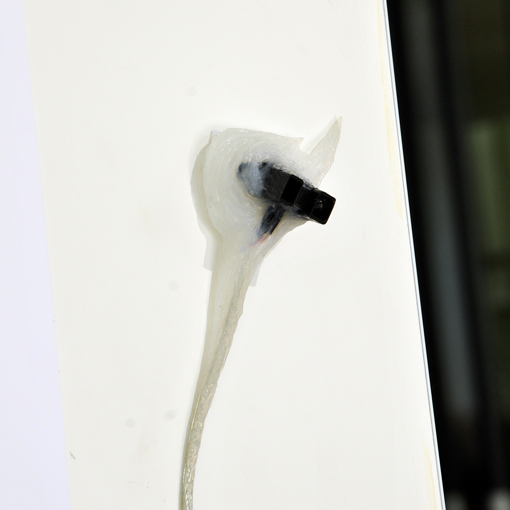
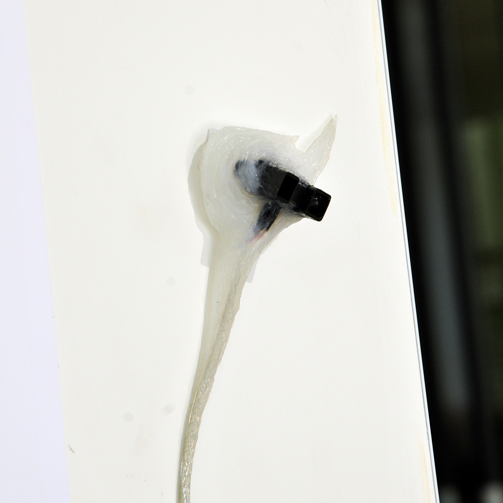

Co-production : Accès)s( numérique, Le Bel Ordinaire, La Gaîté Lyrique
Artistes : Fabien Bourlier, Gabriel Malgouyard, Romain Barthélémy
Type : Installation sonore comportementale
Lien : Machines Utopiques
Expos : Festival Accès)s( 2017, Lieu Multiple 2018
Les symbiotes sont des objets bavards qui entrent en symbiose avec le paysage sonore d’un lieu.
Regroupés en colonie et sensibles à leur environnement immédiat, ils tentent des dialogues approximatifs avec nos occupations du territoire. Ils produisent une biophonie artificielle qui s’insère dans des paysages sonores existants.
Ils sont le pendant semi-sauvage de nos machines domestiques. Objets simples, autonomes, prolixes de nature, se prêtant volontiers aux anthropomorphismes, insouciants du bien-être humain, ils sont issus d’un croisement sonore hasardeux entre une cigale et une caisse enregistreuse.
 
